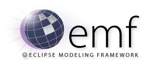
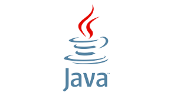

Présentation des projets :
Les projets développés varient entre des programmes desktop, des sites web dynamiques, des prototypes de jeux ou des simulations en réalité virtuelles.
Ces projets sont développés avec divers langages de programmation, Frameworks, API’s et bibliothèques qui les distinguent, ciblant plus d’autonomie en apprentissage des nouvelles technologies.
Les projets et prototypes de jeux sont développés avec le langage C# que le moteur de jeu Unity utilise.
La nature de ces prototypes varie entre les jeux de type ENDLESS, plateforme et les jeux de tire avec une intégration basique d’un mode multi-joueur.

Ce projet consiste à découvrir la Meta-modélisation en créant un générateur de code du langage SDL, à titre d’exemple, provenant d’une description XML.
L’outil de Meta-modélisation utilisé est Ecore qui permet de modéliser des Meta-modèles d’un système, ainsi que les différents liens entre ces entités.

Les divers projets Java développés ont pour but d’autoformation et acquérir plus de savoir sur les design patterns, les interactions hommes-machines, les systèmes de gestion et BDD ainsi que l’intégration des tests unitaires pour le bon fonctionnement du code rédigé.
Le site web Mazaya est dédié à la réservation des stages et formations, celui-ci se compose de plusieurs fonctionnalités tel que :
Une inscription facile et intuitive, la navigation par onglets pour une meilleure prise en main, un espace dédié aux clients pour gérer leurs coordonnées ou réservations ainsi, imprimer les reçus des réservations en format PDF.
Bibliothèques et outils externes : jQuery - Bootstrap – FPDF.
Les minis projets permettent de se former par la pratique aux langages et technologies du web à savoir la programmation avec les langages JavaScript et PHP ainsi que l’utilisation d’AJAX, DOM, jQuery, et XML